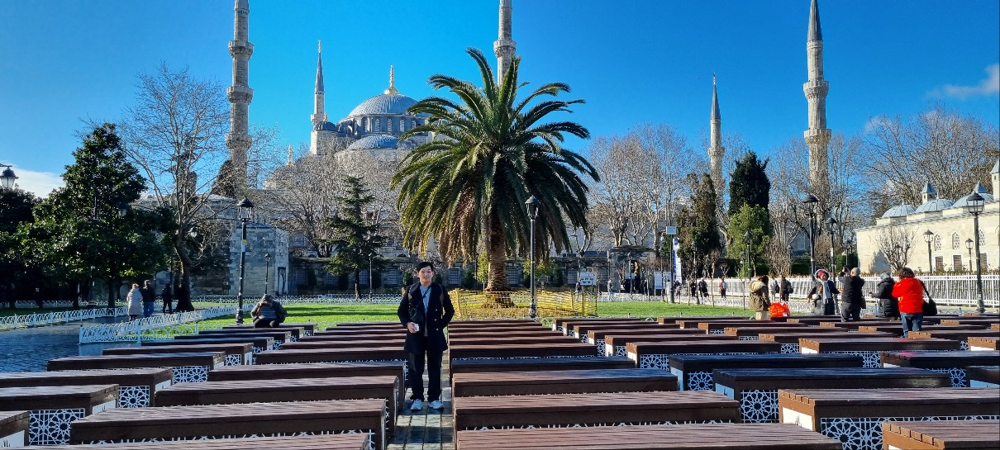

전역 후 터키 여행 가서 찍은 사진들입니다. 이스탄불에서의 경험이 특히 기억에 남습니다.
성당 → 모스크 → 박물관 → 다시 모스크. 같은 장소지만 시대마다 다른 역할을 했던 이곳은 정말 특별했습니다.
돈두르마를 잡는 건 정말 어려웠습니다. 기회를 만든다는 것도, 잡는다는 것도 쉽지 않다는 걸 느꼈어요.

수능 문제에 나왔던 그림을 실제로 보니 정말 감격스러웠습니다. 열흘간의 패키지 여행은 앞으로의 시야를 넓히는 좋은 기회였습니다.